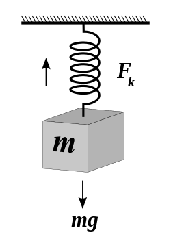

Introducción
La Ley de Hooke es una ley fundamental de la física que describe la relación entre la fuerza aplicada a un resorte y la deformación resultante del mismo. Es ampliamente utilizada en sistemas y fenómenos físicos, desde la mecánica de materiales hasta la dinámica de partículas y la termodinámica, y se aplica en el diseño de dispositivos mecánicos y sistemas de ingeniería.

Simulación
Simular
Calcular constante elástica
N/m
N
m
Algunas aplicaciones practicas de la Ley de Hooke
Actividades
- Realizar un experimento para demostrar la ley de Hooke.
- Diseñar y construir un dispositivo mecánico que utilice la ley de Hooke.
- Buscar actividades y comparar los resultados con el simulador
Bibliografía
- Hooke, R. (1678). "De Potentia Restitutiva, or of Spring, Explaining the Power of Springing Bodies". Philosophical Transactions of the Royal Society of London. 3 (82): 44–55.
- Young, H. D., & Freedman, R. A. (2012). University Physics with Modern Physics (12th ed.). Addison-Wesley.
- Halliday, D., Resnick, R., & Walker, J. (2014). Fundamentals of Physics (10th ed.). John Wiley & Sons.
Contacto
Si tienes alguna pregunta o sugerencia, puedes contactarme a través de mi correo electrónico: 2328796@ucc.edu.ar